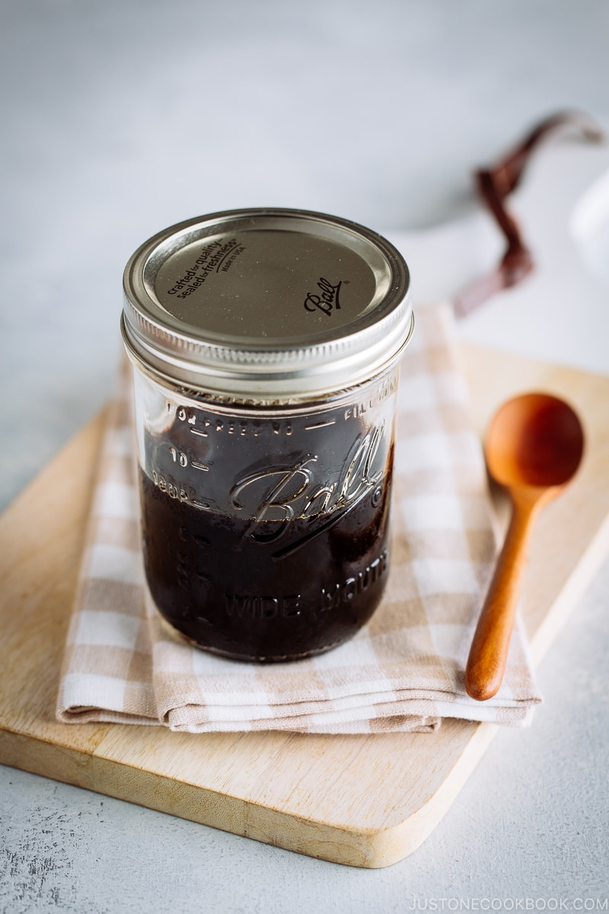

Teriyaki Sauce

Description
Learn how to make delicious and easy homemade Teriyaki Sauce the authentic Japanese way. You only need four ingredients! Sweet, savory, and versatile, it will be your go-to sauce for chicken, salmon, tofu, pork, and even meatballs.
Ingredients
- ½ cup sake
- ½ cup mirin
- ½ cup soy sauce
- ¼ cup sugar
Steps
- In a saucepan, add ½ cup sake and ½ cup mirin.
- Add ½ cup soy sauce and ¼ cup sugar.
- Bring the mixture to a boil over medium heat and continuously stir the sauce until the sugar is dissolved. Once boiling, lower the heat to medium low. Simmer for 10-15 minutes or until the sauce is thickened.
- As you mix the sauce or tilt the saucepan, small bubbles will start to rise and appear on the surface. When this happens, the sauce is ready to use. Pour the sauce into a sterilized jar and leave uncovered to cool. The sauce will thicken as it cools.